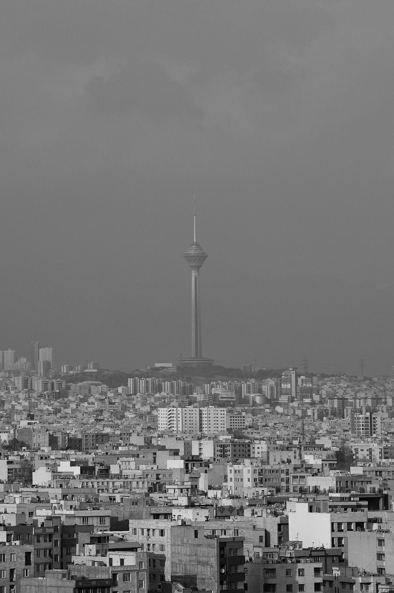
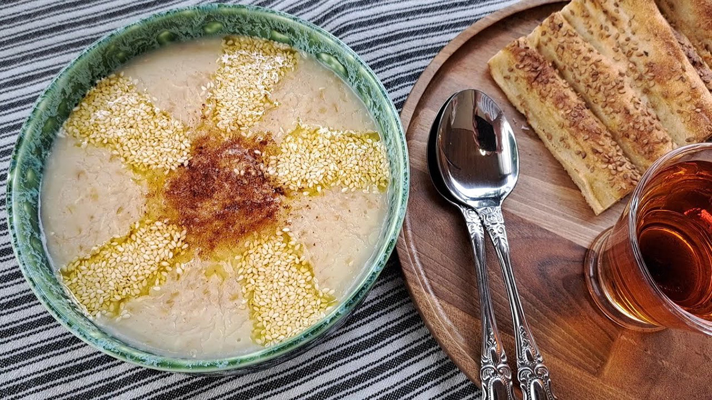

Kabab
Kabab a traditional dish in Iran

Tehran
Tehran Capital of Iran

Dizi
Dizi a traditional dish in Iran

Haft-Sin
Start the new year
“When all your desires are distilled You will cast just two votes: To love more, And be happy.”

Halim
traditional breakfast